Separate the four spaces
A film has at least four spaces: capture (S-Log3, LogC, RAW), working (ACES or DaVinci Wide Gamut), display (Rec.709, P3, HDR PQ), and delivery (platform Rec.709, HLG, PQ). Mix them and the LUT becomes a guess.
Match each source to the correct input transform: camera, gamut, gamma, matrix. If it is missing, shoot a grey card or color chart and build it manually; do not use a “close enough” LUT.
Where the LUT goes: three nodes, no stacking
The input transform creates the working space; the creative LUT sits inside it; the display transform sits before the monitor; the delivery transform sits before output. A common error is putting a Rec.709 look LUT on Log footage, then another display LUT, crushing highlights twice.
Each LUT answers one question: transform, look, or calibration. If it cannot answer, do not stack it. Name nodes input/look/display/delivery so the next artist can read the tree.
Monitor and calibration: trust the screen before the eye
Calibrate the monitor before grading: white point, gamma, gamut, luminance. Without calibration, every decision is true on this screen and false elsewhere. Check black, white, and skin with a grey ramp and color chart.
Do not judge on an office monitor; its contrast and gamut flatten shadows. Client review must use the same display transform, or “the client sees it differently” is usually a different screen, not a bad grade.
Color pipeline: input—working space—display—delivery

Handoff: deliver LUT, node tree, and references together
The handoff includes project file, LUTs, input-transform notes, display-transform notes, reference frames, and a limit list. Sending one LUT without its position is sending nothing.
Mark each reference “light” or “color”: light means direction, softness, ratio; color means white point, skin, saturation. Mixed references make the colorist guess.
Failure case: one LUT on every camera
A three-camera interview used three camera models and one “film LUT” on all sources. A went green in skin, B went grey in highlights, C went red in shadows. The colorist blamed the lighting until realizing the input transforms were never separated.
The fix is per-camera input transforms into one working space, then one creative LUT. Multicam starts with correct transforms, not “looks the same.”
Cost and acceptance
Low: input-transform cleanup and one display calibration, ¥2,000–6,000. Mid: full color management, node tree, handoff pack, ¥6,000–20,000. High: ACES pipeline, dual HDR versions, on-set DIT, ¥20,000–60,000+.
Image note. Covers, diagrams and step images on this page are editorial illustrations or structure diagrams, not photographs of a test performed here; they are not evidence of measured gear performance. Where an image is AI-assisted, the caption says so. Read the test conditions in the text before treating an image as proof.